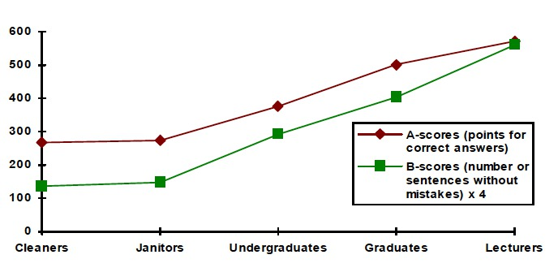
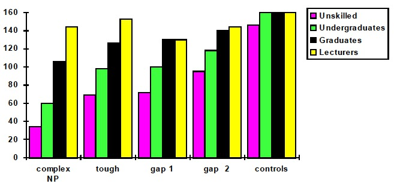

The standard [formalist / functionalist] theory of what language is
for: structured thinking / communication, as in —
On that theory, here's the conception of "meaning", part I:
An alternative conception: "words" as the handles of TOOLS.
The standard conception of "meaning", part II:
An alternative conception: uttering sequences of "words" = working with TOOLS.
Jakobson's six functions of language:
"... the coordination of leg movements in insects, the song of birds, the
control of trotting and pacing in a gaited horse, the rat running the maze,
the architect designing a house, the carpenter sawing a board present a
problem of
A thing to remember: when someone insists on the uniqueness of human language, ask about individual differences and also about any animal communication systems whose study may be relevant. If they tell you that none are, persist.
Another thing to remember: when someone describes to you a study in psychology or neurobiology of language, ask about individual differences.
Q1. Robert was convinced that Jerry would get the job even though he
wasn't really qualified for it. [control]
What was Robert convinced of?
What wasn't Jerry qualified for?
Q2. Sandy will be easy to get the president to vote for.
Who will vote?
For whom will this person vote?
What will be easy?
Who will find it easy to do this?
Q3. It was King Louis who the general convinced that this slave might
speak to.
Who might the slave speak to?
Who did the convincing?
Who was convinced of something?
Q5. The manager knew that the fact that taking good care of herself was essential upset
Alice.
What did the manager know?
What upset Alice?
Test scores, by subject population type (max possible score was 640):

Test scores, by sentence type and subject population type:

The problem of serial order in behavior, as formulated by Lashley
(1951), contains, upon reflection, two complementary aspects:
[John Du Bois
(2014). Towards a dialogic syntax, Cognitive
Linguistics 25:359-410]
[John Du Bois
(2014). Towards a dialogic syntax, Cognitive
Linguistics 25:359-410]
Above: partially ALIGNED and MATCHED halves of a snippet of
dialogue from the Santa Barbara Corpus of Spoken American English.
Right: partially ALIGNED and MATCHED portions of a GRAPH representation of the (joint) corpus.
Graphs are a useful computational tool for representing discrete sequential (and hierarchical) structure.
[...] The grammatical possibilities of a language are like a
network of paths in open grassland. There are a number of heavily
used, wide and well-beaten tracks. Other, less popular routes are
narrower, and the variation extends smoothly down to routes used only
very occasionally, which are barely distinguishable furrows or, if
they are used rarely enough, perhaps not even visible as permanent
marks in the grass; but there are no fences anywhere preventing any
particular route being used, and there is no sharp discontinuity akin
to the contrast between metalled roads and foot-made paths.
Think of words as stations, sentences as using the
system for travel (possibly changing trains).
On the standard [formalist / functionalist] account, to know language means to possess a GRAMMAR — a system of formal rules that (i) generate (all and only well-formed) sentences and that (ii) support parsing of sentences into their constituents.
An alternative theory that is gaining ascendance posits
a LEXICON/GRAMMAR that is a collection of patterns
(
These patterns are
The radical (and, I think, correct) view is that constructions form
a TOOLKIT for INFLUENCING other people's thinking and behavior (as
well as one's own).
To know language means to have mastery of a toolkit that allows one to influence behavior and thinking, of others and of self.
The general computational problem implied by the above
characteristics is that of control. The need for control is
universal in the animal kingdom; as Savage-Rumbaugh and Lewin (1994)
put it: “All organisms with complex nervous systems are faced with
the moment-by-moment question that is posed by life: what shall I do
next?”
Language behaviors reside in a graph-like space of sequences of multimodal gestures that embody a game of influence between interlocutors and that are subject to multiple, dynamically changing influences and contextual constraints. THIS IS THE SPACE THAT NEEDS TO BE LEARNED.
The ultimate problem of control in language is, however, the same as in any other behavior: whereas its general formulation is “What shall I do next?”, in language it becomes “What shall I say [and do] next?”. Thus, insofar as it requires choosing a course of action, behavioral control is always an exercise in navigation: “Where, in the space of possible choices, should I go?”
Last modified: Mon Aug 3 2020 at 22:06:24 EDT